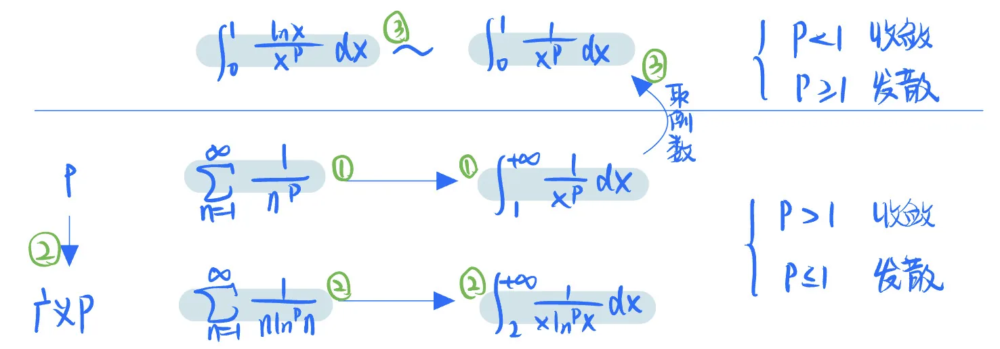

遇到新题尝试下面思路
$$
S_n= u_1+u_2+...+u_n\
\lim_{x\to+\infty}S_n=A, & 收敛\
\lim_{x\to+\infty}S_n=\infty或不存在, & 发散
$$
性质1：线性
$$
\sum_{n=1}^{\infty}{au_n+bv_n} = \sum_{n=1}^{\infty}au_n+\sum_{n=1}^{\infty}bv_n
$$
性质2：m项后余项与原级数同敛散性——改变有现项不改变敛散性
性质3：级数收敛，则通项趋于零
概念
$$
\sum_{n=1}^{\infty}u_n\u_n\ge0
$$
收敛原则
$$
\sum_{n=1}^{\infty}u_n收敛\to S_n有界\
S_n有界\to \sum_{n=1}^{\infty}u_n收敛
$$
比较判别法
小发则大发，大收则小收
可以结合常用不等式
比较判别法的极限形式
$$
\lim_{x\to\infty}\frac{u_{n}}{v_n}=
\begin{cases}
0&,按比较判别法\
\infty&,按比较判别法\
A\in(0,\infty)&,u_n,v_n同敛散
\end{cases}
$$
比值判别法（达朗贝尔判别法）
$$
\lim_{x\to\infty}\frac{u_{n+1}}{u_n}=\rho\
\begin{cases}
收敛&,\rho<1\
发散&,\rho>1\
失效&,\rho=1
\end{cases}
$$
根值判别法（柯西判别法）
$$
\lim_{x\to\infty}\sqrt[n]{u_n}=\rho\
\begin{cases}
收敛&,\rho<1\
发散&,\rho>1\
失效&,\rho=1
\end{cases}
$$
积分判别法
$$
u_n非负单减，\sum_{n=1}^{+\infty}u_n与\int_1^{+\infty}f(x)dx同敛散
$$
定义：$\sum_{x=1}^{+\infty}(-1)^nu_n$，注意$u_n>0$，不等于零
莱布尼兹判别法
$$
\begin{cases}
u_n单调递减\
\lim_{n\to+\infty}u_n=0
\end{cases}
\to收敛
$$
一些常用反例
$$
u_n = (-1)^n \frac{1}{\sqrt n}\
u_n = \frac{1}{\sqrt n}\
u_n = (-1)^n \frac{1}{n}\
u_n = \frac{1}{n}
$$
常用结论
p级数
$$
\sum_{n=1}^{\infty}\frac{1}{x^p}
\begin{cases}
收敛&,p>1\
发散&,p≤1
\end{cases}
$$
广义p级数
$$
\sum_{n=2}^{\infty}\frac{1}{x\ln^px}
\begin{cases}
收敛&,p>1\
发散&,p≤1
\end{cases}
$$
- p=1的时候都是发散的
- Pxx与广义Pxx条件是敛散性一样的。所以才叫广义。
- P积分的(0-1)与(1,+∞)积分实际上可以认为是x取倒数。
- $\int_1^{+\infty}\frac{1}{x^p}$与$\int_1^{+\infty}\frac{\ln x}{x^p}$结果一样。

$$
\sum_{n=1}^\infty u_n收敛 \nrightarrow \sum_{n=1}^\infty |u_n|收敛\
eg. \sum_{n=1}^\infty(-1)^n\frac{1}{n}收敛，\sum_{n=1}^\infty\frac{1}{n}发散
$$
$$
\sum_{n=1}^\infty u_n收敛\to \sum_{n=1}^\infty u_{n}^2
\begin{cases}
收敛&,u_n≥0\
不确定&,u_n为任意项\
\end{cases}\
eg. \sum_{n=1}^\infty(-1)^n\frac{1}{\sqrt n}收敛，\sum_{n=1}^\infty\frac{1}{n}发散
$$
$$
\sum_{n=1}^\infty u_n收敛\to \sum_{n=1}^\infty u_{n}\cdot u_{n+1}
\begin{cases}
收敛&,u_n≥0,(1)\
不确定&,u_n为任意项,(2)\
\end{cases}\
prove(1).
u_n\cdot u_{n+1}≤\frac{1}{2}(u_n^2+u_{n+1}^2)\
eg(2).
\sum_{n=1}^\infty(-1)^n\frac{1}{\sqrt n}收敛，\sum_{n=1}^\infty\frac{1}{\sqrt {n(n+1)}}发散
$$
$$
\sum_{n=1}^\infty u_n收敛 \nrightarrow \sum_{n=1}^\infty (-1)^nu_n收敛\
eg. \sum_{n=1}^\infty(-1)^n\frac{1}{n}收敛，\sum_{n=1}^\infty\frac{1}{n}发散
$$
$$
\sum_{n=1}^\infty u_n收敛 \nrightarrow\sum_{n=1}^\infty (-1)^n \frac{u_{n}}
{n}收敛\
eg. \sum_{n=1}^\infty(-1)^n\frac{1}{\ln n}收敛，\sum_{n=2}^\infty\frac{1}{n\ln n}发散
$$
$$
\sum_{n=1}^\infty u_n收敛\to \sum_{n=1}^\infty u_{2n}与\sum_{n=1}^\infty u_{2n+1}
\begin{cases}
收敛&,u_n≥0\
不确定&,u_n为任意项\
\end{cases}\
eg.
\sum_{n=1}^\infty(-1)^n\frac{1}{n}收敛，\sum_{n=1}^\infty\frac{1}{2n}发散
$$
$$
\sum_{n=1}^\infty u_n收敛\to \sum_{n=1}^\infty (u_{2n}+u_{2n-1})收敛\
\sum_{n=1}^\infty (u_{2n}+u_{2n-1})收敛,则\sum_{n=1}^\infty u_n收敛,错！还需要\lim_{n\to \infty}u_n=0\
eg. u_{2n}=1, u_{2n-1}=-1, \sum_{n=1}^\infty (u_{2n}+u_{2n-1})=0, \sum_{n=1}^\infty u_n发散
$$
$$
\sum_{n=1}^\infty u_n收敛,\sum_{n=1}^\infty (u_{2n}-u_{2n-1})不确定\
eg. \sum_{n=1}^\infty(-1)^n\frac{1}{n}收敛，\sum_{n=1}^\infty (u_{2n}-u_{2n-1})=\sum_{n=1}^\infty\frac{1}{n}发散
$$
$$
\sum_{n=1}^\infty u_n收敛\to
\begin{cases}
\sum_{n=1}^\infty (u_{n}+u_{n+1})收敛,\sum_{n=1}^\infty u_{n}+\sum_{n=1}^\infty u_{n+1}收敛\
\sum_{n=1}^\infty (u_{n}-u_{n+1})收敛,\sum_{n=1}^\infty u_{n}-\sum_{n=1}^\infty u_{n+1}发散
\end{cases}
$$
$$
\sum_{n=1}^\infty |u_n|收敛,则\sum_{n=1}^\infty u_{n}收敛\
\sum_{n=1}^\infty u_n发散,则\sum_{n=1}^\infty |u_{n}|收敛
$$
$$
\sum_{n=1}^\infty u_n^2收敛,则\sum_{n=1}^\infty \frac{u_n}{n}绝对收敛\
因为|\frac{u_n}{n}|≤\frac{1}{2}(u_n^2+\frac{1}{n^2})
$$
$$
a,b,c≠0\
au_n+bv_n+cw_n=0\
则在\sum_{n=1}^\infty u_n,\sum_{n=1}^\infty v_n,\sum_{n=1}^\infty w_n中只有有两个收敛，另一个必收敛
$$
$$
\sum_{n=1}^\infty u_n,\sum_{n=1}^\infty v_n都收敛，则\sum_{n=1}^\infty u_n\pm v_n收敛
$$
$$
\sum_{n=1}^\infty u_n收敛, \sum_{n=1}^\infty v_n发散，则\sum_{n=1}^\infty u_n\pm v_n发散
$$
$$
\sum_{n=1}^\infty u_n,\sum_{n=1}^\infty v_n都发散，则\sum_{n=1}^\infty u_n+ v_n发散(u_n≥0, v_n≥0)\
\sum_{n=1}^\infty u_n,\sum_{n=1}^\infty v_n都发散，则\sum_{n=1}^\infty u_n\pm v_n不确定(u_n, v_n任意)
$$
$$
\sum_{n=1}^\infty u_n,\sum_{n=1}^\infty v_n都收敛，
\begin{cases}
(1)\sum_{n=1}^\infty u_n\cdot v_n收敛 &,u_n≥0, v_n≥0\
(2)\sum_{n=1}^\infty |u_n|\cdot v_n收敛&, u_n任意, v_n≥0\
(3)\sum_{n=1}^\infty u_n\cdot v_n不确定&, u_n, v_n不确定\
\end{cases}\
prove(1):(u_n\cdot v_n≤\frac{u_n^2+v_n^2}{2})\
$$
函数项级数
$$
\sum_{n=1}^{\infty}u_n(x)
$$
幂级数
$$
\sum_{n=1}^{\infty}a_n(x-x_0)^n\
\sum_{n=1}^{\infty}a_nx^n
$$
阿贝尔定理
$$
\lim|\frac{a_{n+1}}{a_n}| = \rho\
R=
\begin{cases}
\frac{1}{\rho}&,\rho≠0\
0&,\rho=\infty\
\infty&,\rho=0
\end{cases}\
注意端点要单独确认
$$
收敛域求法（具体型）
$$
\lim|\frac{a_{n+1}}{a_n}| <1\
收敛区间为x范围\
注意端点要单独确认，得到收敛域
$$
抽象型，对于$\sum_{n=0}^{\infty}a_n(x-x_0)^n$
$$
若x=b时条件收敛\to R=|b-x_0|\
(x-x_0)^n到(x-x_1)^n的变换不改变收敛域,包括乘(x-x_0)^k与平移\
对级数逐项求导，收敛半径不变，收敛域可能缩小\
对级数逐项积分，收敛半径不变，收敛域可能扩大\
$$
如何改造通项与下标
$$
\sum_{n=1}^{\infty}a_nx^n = \sum_{n=0}^{\infty}a_{n+1}x^{n+1}\
\sum_{n=1}^{\infty}a_nx^n = x\cdot \sum_{n=1}^{\infty}a_nx^{n-1}\
\sum_{n=0}^{\infty}a_nx^n = a_0 + \sum_{n=1}^{\infty}a_nx^n
$$
先导后积
$$
S(x) = S(x_0)+\int_{x_0}^x(\sum_{n=1}^{\infty}a_nt^n)'dt
$$
先积后导
$$
S(x) = (\int \sum_{n=1}^{\infty}a_nt^n dt)'
$$
常用结论
$$
\sum_{n=1}^{\infty}\frac{x^n}{n} = -\ln(1-x),x\in[-1,1)\
\sum_{n=1}^{\infty}nx^{n-1} = \frac{1}{(1-x)^2},x\in(-1,1)
$$
常用的展开式(注意收敛域)
$$
e^x = \sum_{x=0}^\infty \frac{x^n}{n!} &,x\in(-\infty,+\infty)\
\frac{1}{1-x} = \sum_{x=0}^\infty x^n &,x\in(-\infty,+\infty)\
\frac{1}{1+x} = \sum_{x=0}^\infty (-x)^n &,x\in(-\infty,+\infty)\
\ln(1+x) = \sum_{x=1}^\infty (-1)^{n-1}\frac{x^{n}}{n}&,x\in[-1,1)\
\sin x = \sum_{x=0}^\infty (-1)^n\frac{x^{2n+1}}{(2n+1)!} &,x\in(-\infty,+\infty)\
\cos x = \sum_{x=0}^\infty (-1)^n\frac{x^{2n}}{(2n)!} &,x\in(-\infty,+\infty)\
(1+x)^a = 1+ax+\frac{a(a-1)}{2!}x^2+\cdots+\frac{a(a-1)..(a-n+1)}{n!}x^n+\cdots&,
\begin{cases}
x\in(-1,1),a≤1\
x\in(-1,1],a\in(-1,0)\
x\in[-1,1],a>0,a\notin N^\
x\in R,a\in N^
\end{cases}
$$
函数展开
$$
f(x) = \sum_{n=0}^{\infty} \frac{f^{(n)}(x_0)}{n!}(x-x_0)^n\
f(x) = \sum_{n=0}^{\infty} \frac{f^{(n)}(0)}{n!}x^n
$$